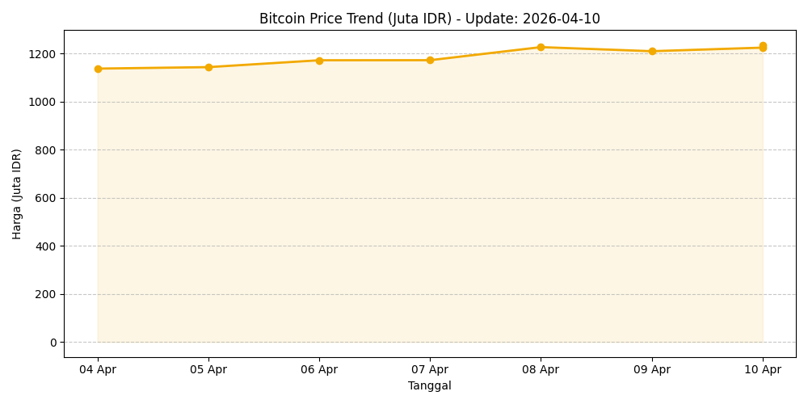

THE ARCHITECT'S STORY
From Classroom to Cloud: The Journey of a Data Architect
By: Arjun Sujarwo
[cite: 43, 126]
Saya memulai perjalanan saya di dunia teknologi dengan rasa ingin tahu yang besar tentang bagaimana data menggerakkan dunia[cite: 14, 132].
Sebagai mahasiswa Sistem Informasi, misi saya adalah membangun fondasi data yang cerdas untuk mendukung keputusan strategis[cite: 11, 134].
Fokus saya adalah menjembatani efisiensi sistem operasional dengan pengelolaan data skala besar[cite: 14, 134].
Saya percaya bahwa data mentah adalah peluang, dan sistem otomatis adalah kunci efisiensi[cite: 15, 134].
Prestasi Akademik & Sertifikasi
Dasar pemikiran analitis saya dibentuk di Universitas Bina Sarana Informatika, di mana saya meraih IPK 3.85 / 4.00.
Selain studi formal, saya memperkuat kompetensi saya melalui sertifikasi industri:
- Data Analysis Mastery - MySkill [cite: 8, 162]
- Sistem Basis Data Industri - G2academy [cite: 9, 163]
- Maintenance Operations - PT Lucky Indah Keramik [cite: 19, 136]
LATEST PROJECTS
PROJECT 1
Automated Trend Analyzer: CNBC Indonesia Case Study
[cite: 16, 143]
Pipeline data end-to-end dari web scraping hingga analisis kata kunci secara real-time menggunakan GitHub Actions[cite: 16, 146].

Sistem ini mengotomatisasi pengambilan data dari portal berita global, mengolahnya dengan Python, dan menyajikannya dalam visualisasi tren yang informatif[cite: 16, 145].
Python | BeautifulSoup | GitHub Actions
[cite: 17, 151, 153]
PROJECT 2
Action & Sci-Fi Dominate Global Box Office
[cite: 147]
Proses ETL (Extract, Transform, Load) pada dataset IMDB Top 1000 untuk menghasilkan rekomendasi strategis bagi bisnis[cite: 94, 148].

Key Insights from SQL Analysis:
- Data Cleaning: Teruji dalam melakukan eksplorasi data (EDA) dan pembersihan data mentah[cite: 95, 149].
- SQL Mastery: Menggunakan keterampilan pemrograman SQL untuk mengekstraksi informasi krusial[cite: 87, 152].
SQL | PostgreSQL | Data Modeling
[cite: 84, 152]
PROJECT 3
Crypto Intelligence: Real-Time Market Sentiment
Integrasi API untuk memantau pergerakan harga pasar sekaligus menganalisis indikator secara otomatis.

Market Condition: Analyzing...
*Status diperbarui otomatis via Python Script
- Mengambil data secara dinamis lewat REST API.
- Visualisasi tren untuk mendukung pengambilan keputusan strategis[cite: 134].
Python | API | Automation
[cite: 78, 153]